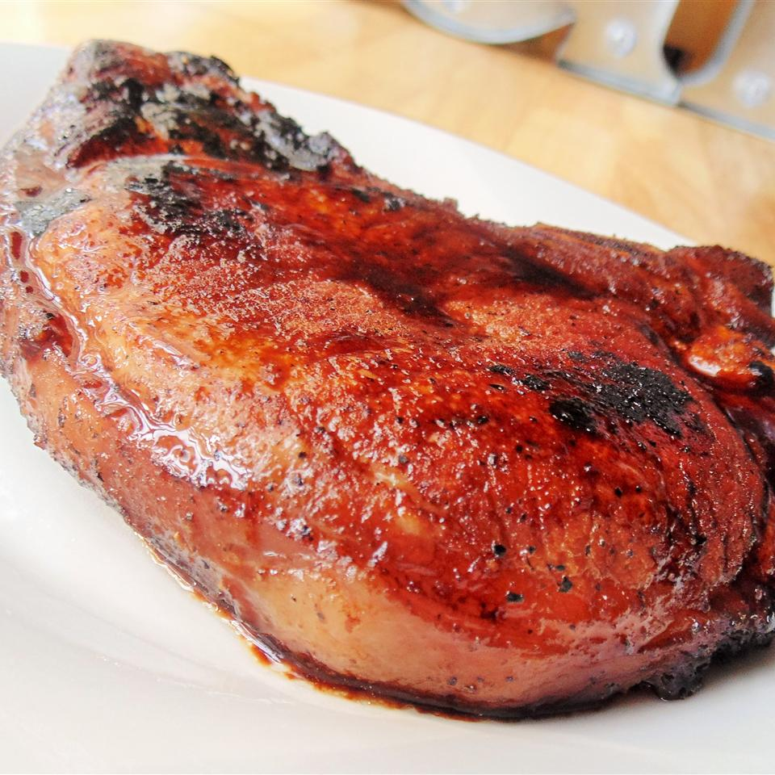

Teriyaki Pork Chops

Description
Easy teriyaki flavored pork chops.
Ingredients
Ingredients you will need:
- 3/4 cup teriyaki sauce.
- 2 & 1/4 teaspoon garlic salt.
- 1 & 1/2 teaspoon ground black pepper.
- 1 tablespoon olive oil.
- ~4 pork chops.
Steps
- Combine teriyaki sauce, garlic salt, and black pepper into a bowl.
- Place pork chops into a bag and pour 3/4 of the teriyaki sauce mixture into the bag. (You will use the remaining 1/4 of the sauce later)
- Let pork chops marinate for 30 minuets.
- Once the pork chops have marinated, place skillet on medium heat and add olive oil.
- Take the pork chops out of the marinade and place them in the skillet. (Discard used marinade)
- Cover and cook pork chops till they have browned. ~15 minuets
- Flip and continue cooking till they are cooked through.
- Once the pork chops are done, add the remaining 1/4 of teriyaki mixture to the skillet.
- Cover skillet and let simmer for about 5 minutes.
- Enjoy.